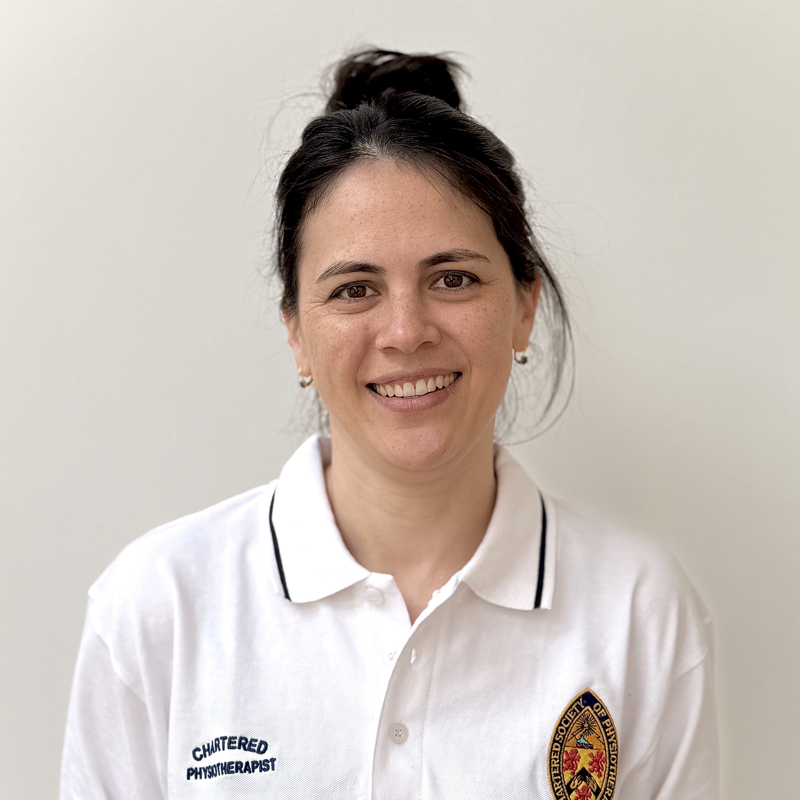

Meet Rebecca

Background & experience
Rebecca Lin qualified as a Physiotherapist in 2008 from the University of Birmingham, bringing more than 15 years of clinical experience to every session. She has spent 12 of those years within the NHS, where she worked with babies, children and teenagers across hospitals, homes, nurseries and schools.
She previously worked at the Royal Manchester Children's Hospital, where she gained extensive experience in paediatric neurology, respiratory care and orthopaedics. Her true passion, however, lies in musculoskeletal physiotherapy, which she chose to specialise in at Kingston Hospital in 2017.
This breadth of experience has given Rebecca a holistic and comprehensive approach, in which she combines evidence-based practice with warmth and patience for every child and family she works with.
- ✓ BSc Physiotherapy, University of Birmingham (2008)
- ✓ HCPC Registered Physiotherapist (PH90202)
- ✓ Chartered Physiotherapist MCSP MAPCP
- ✓ 15+ years clinical experience (12 NHS)
- ✓ Enhanced DBS checked
"As a mum myself, I live the reality of a busy family schedule and I build that understanding into everything I do."
My approach
I believe that to be effective, paediatric physiotherapy must be engaging as well as functional. My focus is on creating fun, interactive, evidence-based programmes children enjoy whilst ensuring parents feel informed, involved and confident in every step of the plan.
I always try to ensure that home exercises are realistic and practical, so they can easily be incorporated into the daily routine of a busy family.
Why home visits?
Children are assessed and treated in the environment they know best, with their own toys, equipment and familiar surroundings to hand.
For families with younger children, or children who find new settings challenging, this can make a significant difference to how relaxed and cooperative they feel and how effective the session is.
It makes life easier for busy parents. No travelling, no waiting rooms and no disruption to routines.